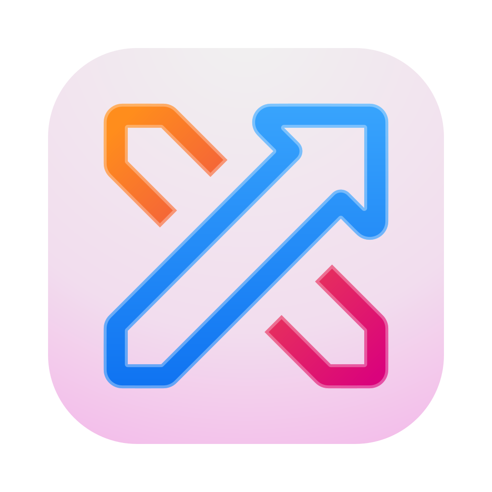
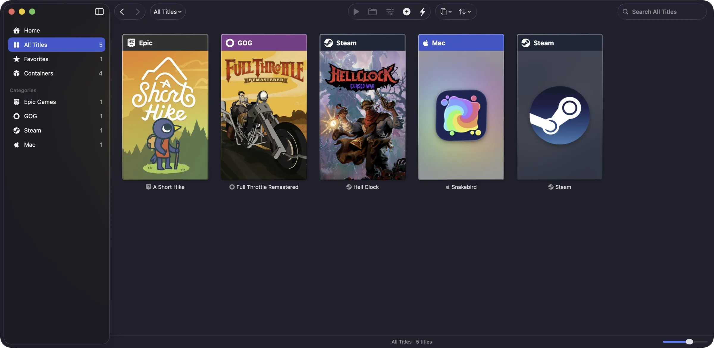

OverPass
Run Windows games on your Mac. Pick a game, click Install, and play.
$ curl -fsSL https://overpass.arctim.no/install | bash
Paste it into Terminal. It puts OverPass in your Applications folder and opens it.

Everything you have installed, from every store, as covers named after where each game comes from.
One click per game
OverPass downloads Wine, makes the game its own container and installs the runtimes it needs.
Graphics on Metal
Direct3D 9 to 12 run on Apple's Metal through OverPass Runtime, with DXVK and WineD3D as choices.
Your stores, built in
Steam, Epic, GOG, EA, Battle.net, Ubisoft and Rockstar install in one click, and your library shows every game.
Free and open source
Built on Wine, DXMT and many other open projects, and open itself. Reports go straight to the developers.
Needs macOS 15 or later on a Mac with Apple silicon. Updates install from inside OverPass.